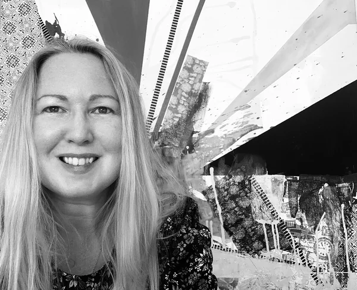
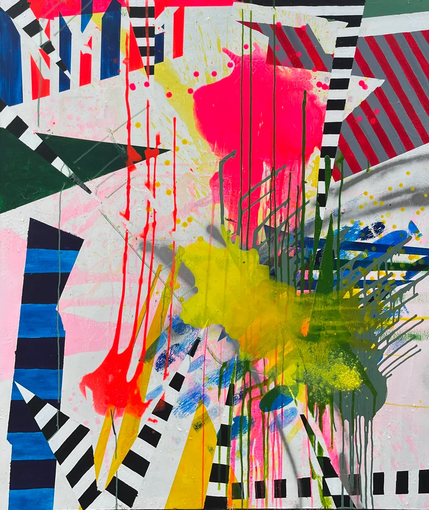
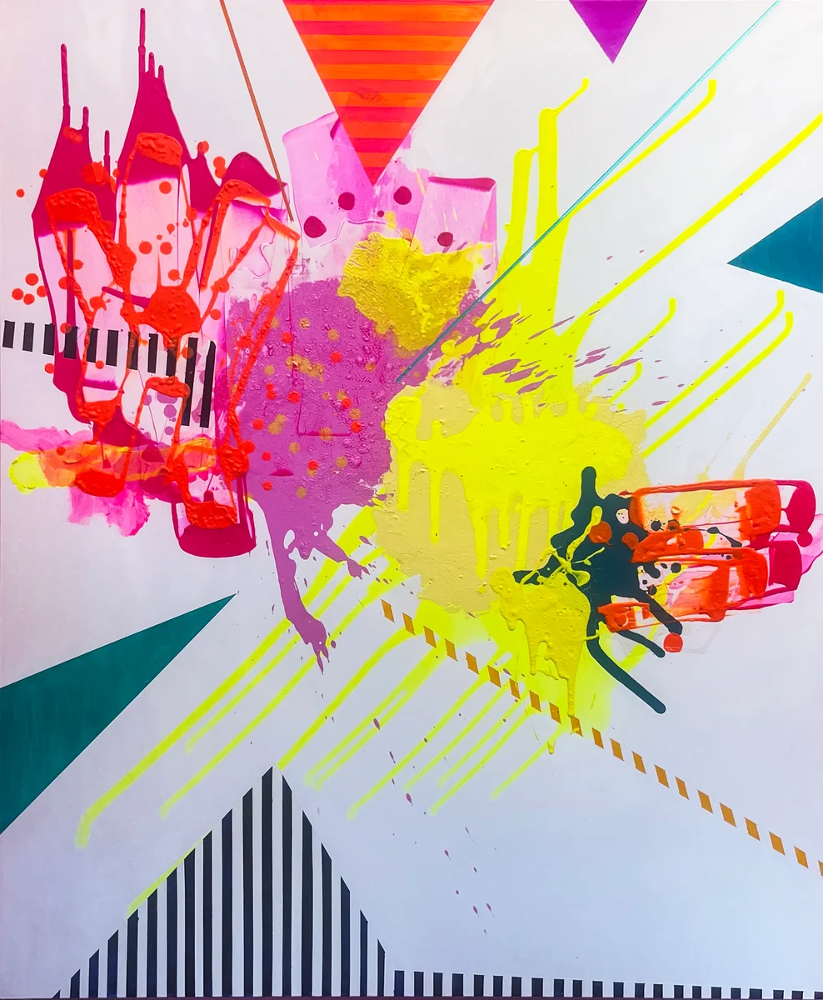
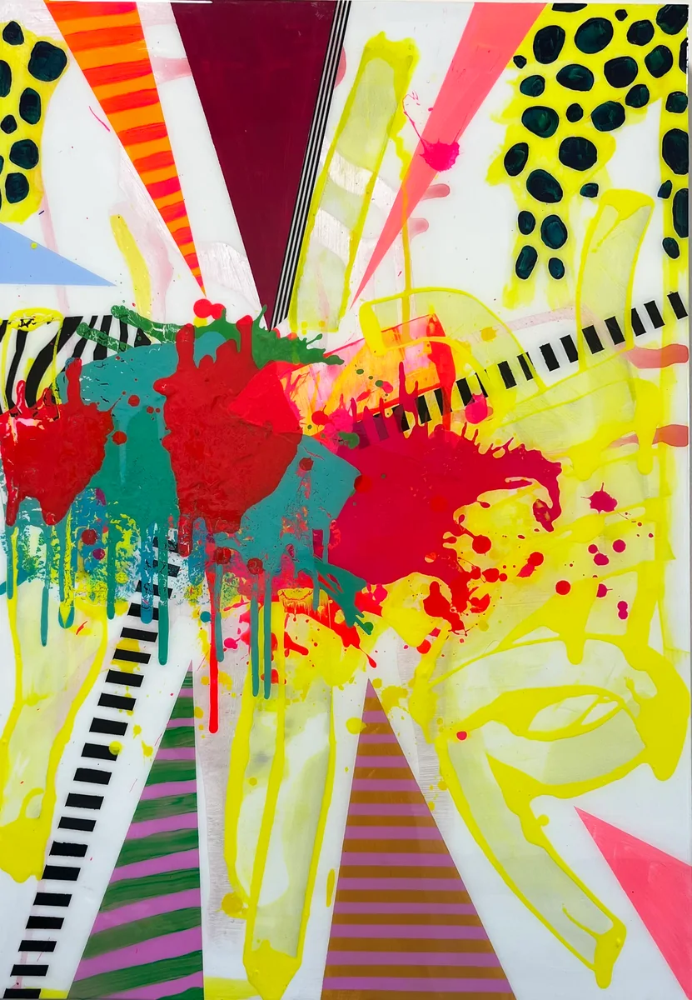
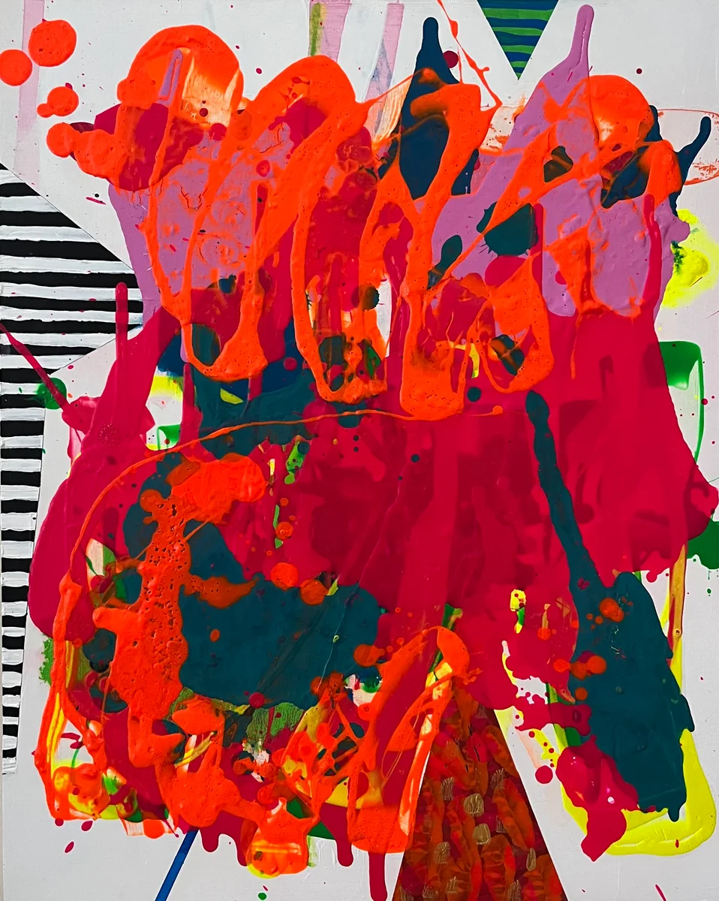

Clare O'Connor
Clare O'Connor is an abstract painter who practice explores energy, consciousness and the subconscious mind. Her paintings are full of colour, flow and movement. She creates vibrant visual labyrinths which are tactile, multi-dimensional, energetic and dynamic.
Open for commissions
Clare O'Connor welcomes enquiries about new, commissioned work. Whether to take a commission on, and its size, subject, price and timing, are for you and the artist to agree directly.
Works
10 artworks
 Navigating The Labyrinth No. 12015 · Acrylic, collage & varnish on Canvas · 147 × 100 × 1.8 cm€3,500
Navigating The Labyrinth No. 12015 · Acrylic, collage & varnish on Canvas · 147 × 100 × 1.8 cm€3,500
Navigating the Labyrinth Series2013 · Acrylic & Varnish on Canvas · 140 × 120 × 5 cm€4,000 Energetic Labyrinths No. 172026 · Acrylic & Varnish on Canvas · 100 × 100 × 5 cm€2,500
Energetic Labyrinths No. 172026 · Acrylic & Varnish on Canvas · 100 × 100 × 5 cm€2,500
Energetic Labyrinths No.182026 · Acrylic & Varnish on Canvas · 120 × 100 × 5 cm€3,000 Energetic Labyrinths No. 72025 · Acrylic, collage & resin on Wooden Panel · 80 × 60 × 5 cm€1,200
Energetic Labyrinths No. 72025 · Acrylic, collage & resin on Wooden Panel · 80 × 60 × 5 cm€1,200 Energetic Labyrinths No. 82025 · Acrylic, collage & resin on Wooden Panel · 80 × 60 × 5 cm€1,200
Energetic Labyrinths No. 82025 · Acrylic, collage & resin on Wooden Panel · 80 × 60 × 5 cm€1,200
Perception No.42025 · Acrylic, collage & resin on Wooden Panel · 100 × 70 × 5 cm€1,500 Energetic Labyrinths 122026 · Acrylic and varnish on Wooden Panel · 50 × 40 × 5 cm€800
Energetic Labyrinths 122026 · Acrylic and varnish on Wooden Panel · 50 × 40 × 5 cm€800
Energetic Labyrinths 62026 · Acrylic and varnish on Wooden Panel · 50 × 40 × 5 cm€800 Energetic Labyrinths 82025 · Acrylic, collage & resin on Canvas · 50 × 50 × 2 cm€650
Energetic Labyrinths 82025 · Acrylic, collage & resin on Canvas · 50 × 50 × 2 cm€650
About Clare
Clare O'Connor (b. 1977, Dublin, Ireland) is an award winning artist and designer based in Co. Meath with a BDES in Design Communications & a BA in Visual Arts Practice from IADT, Dublin graduating in 2001 and 2009. Clare has exhibited in Ireland, Germany, Italy, the Netherlands, the United States, China & the UK. Her creative path has evolved from graphic design to a deeply intuitive and layered visual arts practice. She has lived and worked in Berlin and Venice working as an artist assistant to artists like Thomas Killper and Anselm Reyle and she was involved in the running of various exhibitions & pavilions in the Venice Biennale.
She works as an abstract painter and her practice reflects a deepening curiosity about the subconscious mind, neural pathways, energetic expression, movement and flow, how we navigate the many layers of consciousness and how we access and align to our own creative power. Her Intuitive paintings use a dynamic interplay of organic & organised forms, complimentary & contrasting colour, stripes, mark & void. Combining an element of chance, She uses vivid colours, patterns, multiple layers & juxtaposed shapes which create movement & a sense of positive energy creating vibrant visual labyrinths to explore. The resulting works are full of colour and energy. They are tactile, multi-dimensional, energetic and dynamic.
She is currently Associate Artist in Visual Arts in Meath for 2025/26 with Meath Arts Office. Meath County Council has bought 6 of my paintings for the MCC Arts Collection and she has received regular Professional Artist Development awards from MCC & the Arts Council.
Interested in Clare O'Connor's work?
Send an enquiry through PlotArt and we'll put you in touch with the artist.
Enquire through PlotArt